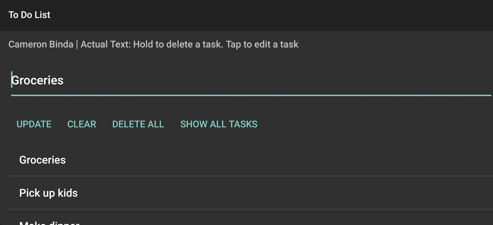
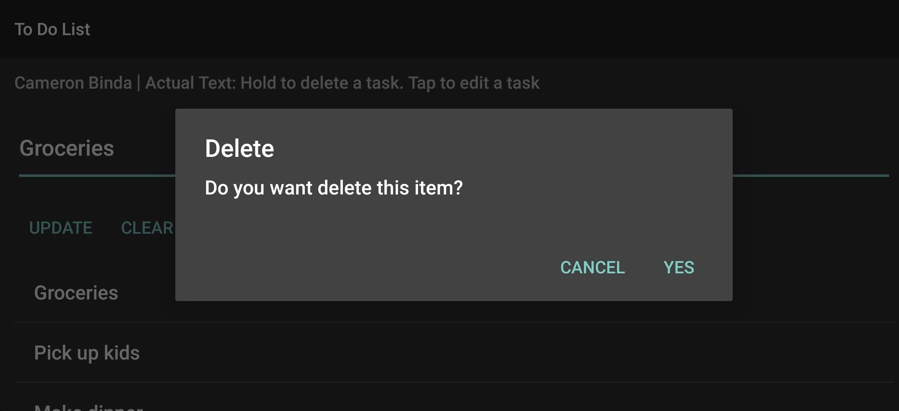
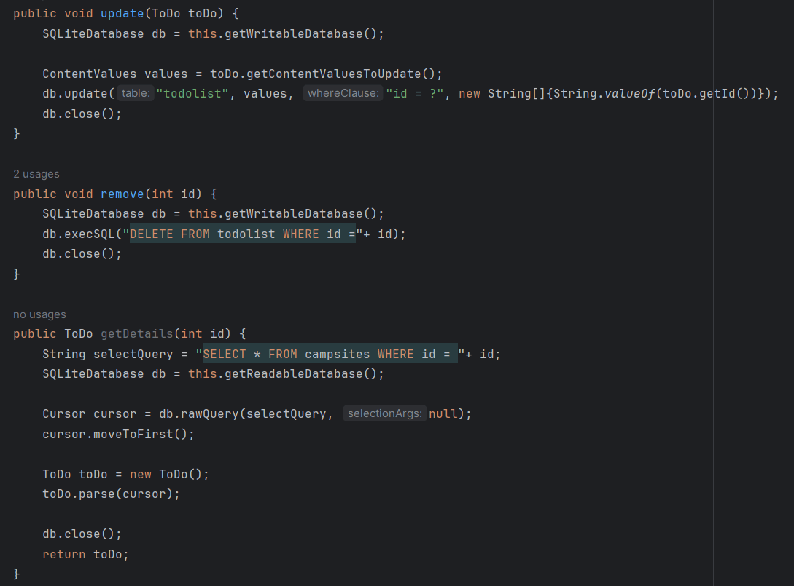
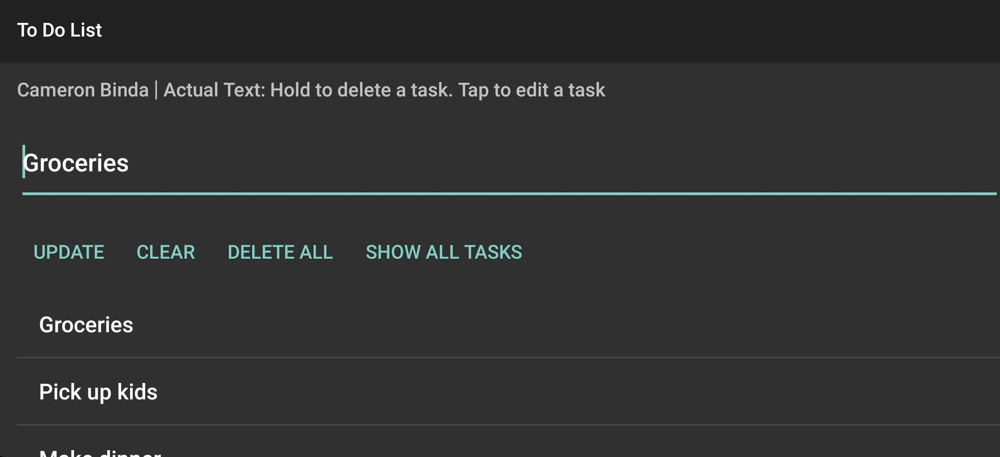
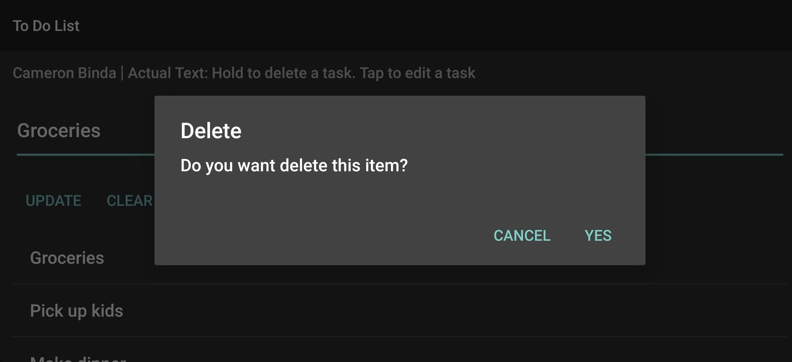
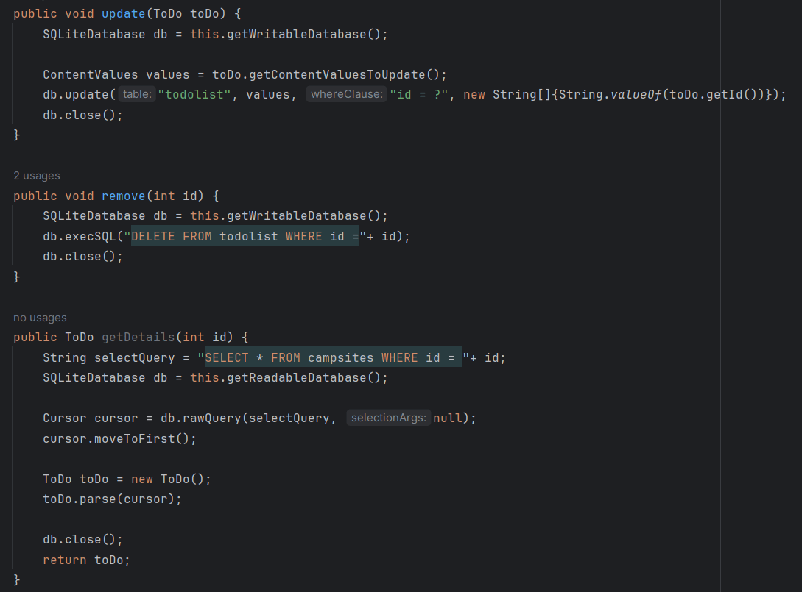

This is an Android app I made for a college course. I
wrote in Java, and it uses SQLite to save data. It is a to-do list
app that allows the user to add, edit, and delete tasks. The source
code can be found
here. You can also find the packaged app and a presentation
under "Releases" on the right.
 





This is a Python module I made for a college course.
Besides Python, this also uses MongoDB to connect to an existing
database. It also includes a Jupyter Notebook file I wrote to run
a website that allows users to search without programming knowledge.
In that file, I gained some experience with the Dash framework
for web development. It was intended for an animal shelter to allow
employees to find dogs that fit requirements for different search and
rescue applications. It gives categories of these different dogs
that can be clicked to filter the database. The source code can be found
here. There is also a zipped version under "Releases" on the right.
This is a JavaScript extension for browsers that
mutes fullscreen video ads on twitch.tv. Twitch's ads
are known to be hard to block. People have done it,
but I couldn't find a working extension. I thought
it would be interesting to try it myself. I was able
to do it, but it plays the video at full volume, and then
breaks the video player at the end. I settled on just
muting them, and have never revisted the project. The
source code can be found
here. There is also a zipped version under
"Releases" on the right.